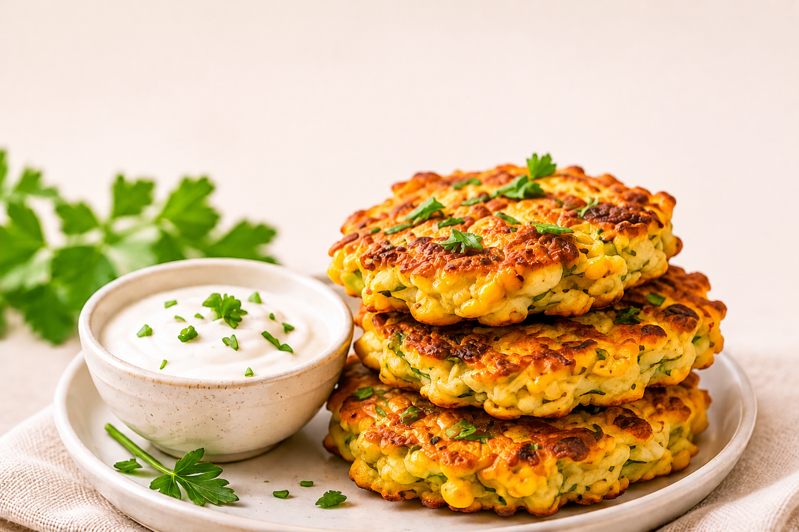

1. Planlæg fleksibelt
Lav en enkel madplan, der giver plads til rester og ændringer.
Konkrete råd og idéer til at bruge mindre madspild i hverdagen.
Lav en enkel madplan, der giver plads til rester og ændringer.
Få ideer til lækre retter af det du allerede har.
Lær forskellen på "bedst før" og "sidste anvendelsesdato".

Lav sprøde grøntsagsfrikadeller af dine grøntsagsrester.